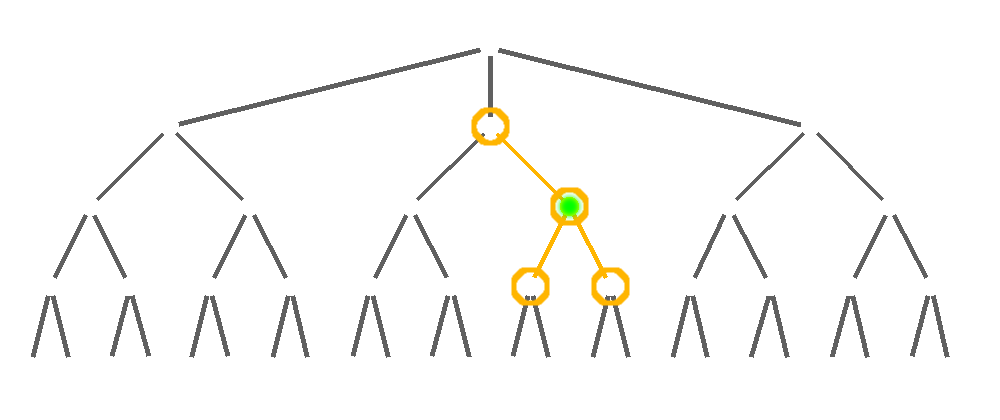

# Bill Piel
- Philadelphia
- programming most of my life
- professionally for 15+ years
- Clojure for 4 years
- work at Magento Analytics
- via acquisition of RJMetrics
- http://billpiel.com
Sayid has changed my life.
(for the better!)
code sprinkling
Step-through debuggers are cool, right?
Not cool enough.
First Steps
- What am I trying to do?
- Has it been done before?
- Does it have a name?
Debugging
with
OMNISCIENCE
(Un)Popularity of Omniscient Debuggers
Google Search FrequencyThe Contrived Example Appplication
Two modes of execution:
- via test
- via http request (curl)

Demo Checklist
|
->>setup
->>tracing
->>execute test
->>view trace
->>query trace
->>inner trace
|
->>debug!
->>curl
->>pprint buffer
->>debug!
->>profiling
|
WE DID IT!
Querying the Trace Tree
instance
ancestors
descendants
ancestors & descendants

limit generation depth
all calls to a function
do it all
Immutability & Structural Sharing
alter-var-root & Meta Data
wrapping and unwrapping
Atoms & Dynamic Scope
| { |
:name func-one
:children
:args {...}
:return ...
|
} |
| [ |
| ] |
(defn f1 [] (let [a (inc 1)] a))
(clojure.core/fn ([] (clojure.core/let [$$ (clojure.core/atom {}) $return (com.billpiel.sayid.inner-trace2/tr-let-ret $$ '{:src-pos {:file "/home/bill/repos/sayid/src/com/billpiel/sayid/inner_trace2.clj", :end-column 25, :end-line 642, :column 6, :line 642}, :ns com.billpiel.sayid.inner-trace2, :name let*, :inner-path [], :parent-name com.billpiel.sayid.inner-trace2/com.billpiel.sayid.inner-trace2/f1, :xpanded-parent nil, :macro? nil, :form (let* [a (inc 1)] a), :inner-path-chain [[]], :xpanded-frm (let* [a (inc 1)] a)} (clojure.core/let [a (inc 1) _ (com.billpiel.sayid.inner-trace2/tr-let-bind '{:src-pos {:file "/home/bill/repos/sayid/src/com/billpiel/sayid/inner_trace2.clj", :end-column 25, :end-line 642, :column 6, :line 642}, :ns com.billpiel.sayid.inner-trace2 , :name let*, :inner-path [], :parent-name com.billpiel.sayid.inner-trace2/com.billpiel.sayid.inner-trace2/f1, :xpanded-parent nil, :macro? nil, :form (let* [a (inc 1)] a), :inner-path-chain [[]], :xpanded-frm (let* [a (inc 1)] a)} $$ a 'a '(inc 1))] a))] (com.billpiel.sayid.inner-trace2/record-trace-tree! $$) $return)))